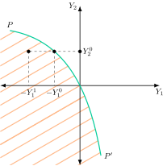
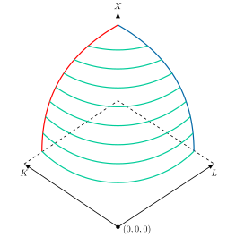
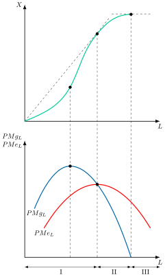
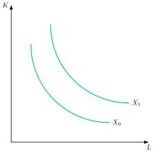
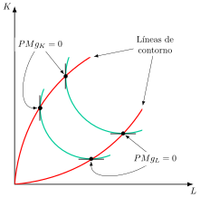
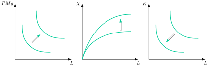
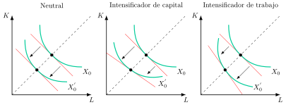
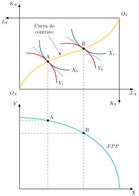
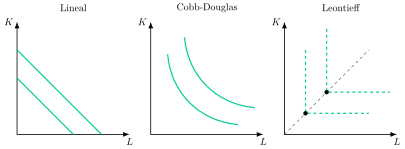
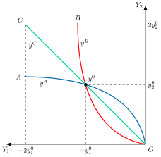

Apuntes para la oposición al Cuerpo de Diplomados Comerciales del Estado
5 Teoría de la producción. Caracterización de la tecnología de la empresa en el corto y el largo plazo. El conjunto de posibilidades de producción. La función de producción. Rendimientos locales y globales a escala. Elasticidad de sustitución. Producción conjunta.
5.1 Introducción  1'
1'
Toda empresa, sea cual sea su actividad, se enfrenta a una misma pregunta de fondo: cómo transformar sus recursos en bienes y servicios de la manera más eficiente posible. Esta pregunta, aparentemente sencilla, es el punto de partida de la Teoría de la Producción, uno de los pilares del análisis microeconómico de la empresa.
Las empresas son, además, actores centrales de la economía: impulsan la inversión, generan empleo y son una fuente vital de ingresos impositivos, al tiempo que se enfrentan hoy a desafíos como la transición hacia métodos de producción más verdes, eficientes y digitalizados. Comprender sus restricciones técnicas no es solo un ejercicio teórico: es el primer paso para explicar la oferta de las empresas en el mercado y, por extensión, cuestiones tan relevantes como el crecimiento económico o el comercio internacional.
Concretamente, se estudiará esta teoría desde la óptica neoclásica, que concibe la empresa como una “caja negra”; abstrayéndose de su propiedad, dirección u organización –aspectos propios de la Teoría de la Organización Industrial (TOI)–, se centrará en las combinaciones de insumos técnicamente eficientes y en el nivel máximo de producción alcanzable dada una tecnología. Esta exposición se ceñirá, por tanto, a las restricciones puramente técnicas que enfrenta la empresa1, dejando a un lado las restantes restricciones a las que también está sujeta. Para ello, se seguirá el siguiente esquema:
Construcción de la función de producción, a partir de los axiomas del conjunto de posibilidades de producción.
Análisis de la función de producción, distinguiendo entre diferentes horizontes temporales.
Producción multiproducto, a partir de una caja de Edgeworth.
5.2 Construcción de la función de producción 6'
Comenzando con la construcción de la función de producción, esta debe reflejar el hecho de que el empresario es un maximizador condicionado, es decir, solo le interesarán las combinaciones técnicamente eficientes.
Para ello, se parte de la representación de la tecnología mediante un vector de producción \(y=\left(y_{1},\ldots,y_{L}\right)\in\mathbb{R}^{L}\), donde si \(y_{i}>0\) es un output y si \(y_{i}<0\) es un input. A partir de este vector ya será posible construir un conjunto de producción que recoja todas las técnicas posibles, \(Y\subset\mathbb{R}^{L}\).
La teoría de la producción establece una serie de axiomas –implican formas concretas del conjunto de producción y tienen diferentes consecuencias– sobre el conjunto de producción suponiendo que existen 2 bienes –\(Y_{1}\) y \(Y_{2}\)–, que pueden ser inputs o outputs, y que podemos observar a partir de la representación gráfica del conjunto en la Figura 5.1.
Axiomas sobre el conjunto de producción
Dichos axiomas sobre el conjunto son:
Axioma 1: Conjunto no vacío, \(Y\neq\emptyset\), es decir, al menos debe existir un vector de producción posible, pues de lo contrario no habría actividad productiva alguna. Y tiene al menos un punto.
Axioma 2: Cerrado2, es decir, el conjunto incluye su propia frontera –propiedad fundamentalmente técnica–. La curva PP’ es la frontera del conjunto de posibilidades de producción3, suponiendo que se puede utilizar bien \(Y_{1}\) para producir \(Y_{2}\) o viceversa, siendo la superficie rayada del gráfico el conjunto de posibilidades de producción.
Axioma 3: Eliminación gratuita, si un plan de producción es técnicamente posible, también lo es cualquier otro que implique iguales o mayores cantidades aplicadas de inputs e iguales o menores cantidades de output. Esto implica que, por ejemplo, la producción \(Y^{0}_{2}\) se puede conseguir con cantidades mayores de inputs, por ejemplo \(Y^{1}_{1}\) en lugar de \(Y^{0}_{1}\). La implicación es que la empresa puede eliminar las mercancías en exceso.
Axioma 4: Imposibilidad de producción libre, no se pueden producir cantidades positivas de algún output sin emplear ningún input –esto es, no free lunch–. Este axioma impide que algún punto del primer cuadrante que no sea el origen pertenezca al conjunto de producción.
Axioma 5: Posibilidad de inacción: \(0\in Y\). La empresa puede cesar la actividad. Este axioma garantiza que la frontera pasa por el origen. Sin embargo, si existen costes hundidos4, es decir, si las decisiones de producción ya se han tomado, la inacción no es posible (gráfico adjunto). Esta diferencia es relevante entre el corto y el largo plazo.
Axioma 6: Irreversibilidad, no se puede invertir el proceso productivo, es decir, no se pueden transformar unos outputs en la cantidad de inputs que se utilizaron para su producción. Por lo tanto, no se puede cambiar el papel de los inputs y los outputs.

Axiomas sobre los rendimientos
Además, se añaden Axiomas que tienen relación con las características de escala de la tecnología. Aunque no siempre se cumplen simultáneamente por ser algunos incompatibles entre sí, determinan la forma de la frontera del conjunto. De esta forma, estas propiedades determinan los rendimientos:
Axioma 1: Aditividad \(\forall y_{1},y_{2}\in Y\Rightarrow y_{1}+y_{2}\in Y\), es decir, si dos vectores son técnicamente posibles su suma también lo es. También se le llama axioma de libre entrada, ya que si una empresa produce \(y_{1}\), y entra otra y produce \(y_{2}\), el conjunto agregado de la producción debe satisfacer la aditividad siempre que exista entrada sin restricciones. Es decir, el plan de producción puede reescalarse hacia arriba. Tiene dos importantes implicaciones:
Macro: Libertad de entrada, en tanto que el conjunto de producción agregado cumple condiciones aditivas.
Micro: Posibilidad de montar dos plantas independientes sin que interfieran la una con la otra
Además, puede implicar rendimientos constantes o crecientes a escala.
Axioma 2: Divisibilidad del proceso productivo, si \(y_{1}\in Y\) y \(\lambda\in\left[0,1\right]\Rightarrow\lambda\cdot y_{1}\in Y\), es decir, supone la posibilidad de reducir la escala de una combinación productiva factible tanto como se desee. El plan puede reescalarse hacia abajo, lo que implica rendimientos decrecientes o constantes.
Axioma 3: Convexidad, cualquier media ponderada de dos planes de producción factibles es también factible, es decir, si \(y_{0},y_{1}\in Y\) y \(\alpha\in\left[0,1\right]\), entonces \(\alpha y_{0}+\left(1-\alpha\right)y_{1}\in Y\)56. Implicaciones:
Perfecta divisibilidad de los planes de producción.
Rendimientos no crecientes.
Combinaciones equilibradas de inputs son más eficientes que las no equilibradas7.
Axioma 4: Convexidad estricta, cualquier media ponderada de dos planes factibles distintos queda en el interior del conjunto, de modo que permite obtener más output que cada uno de ellos por separado. Esto implica rendimientos estrictamente decrecientes.
Los axiomas anteriores nos permiten representar la tecnología mediante una función de producción. El conjunto de posibilidades de producción muestra los planes técnicamente posibles y la función de producción incluye aquellos planes técnicamente eficientes.
Función de producción8
La función de producción se define como aquella relación técnica que relaciona cantidades de insumos empleados y los bienes y servicios producidos en un momento del tiempo y con una tecnología dada. La función de producción recoge el máximo producto que se puede obtener dado un vector de factores productivos9. De esta forma, la función de producción es la frontera del conjunto de posibilidades de producción cuando hay un único output: indica el máximo volumen de producto que puede obtenerse con cada vector de inputs10.
Dicha función11 recoge, por tanto, solo métodos de producción técnicamente eficientes, entendiendo por tales aquellas combinaciones de inputs que producen la mayor cantidad de output posible, o que, produciendo igual output, precisan menor cantidad de inputs12.
Propiedades
Las propiedades genéricas de esta función, derivadas directamente de los axiomas del conjunto de producción, son las siguientes:
Cardinal, pues el producto se mide en unidades físicas y su valor numérico tiene significado, a diferencia de la función de utilidad del consumidor, que es meramente ordinal.
Pasa por el origen,\(f(0)=0\), por el axioma de imposibilidad de producción libre.
No decreciente en los factores, es decir, con productividad marginal no negativa, por el axioma de eliminación gratuita.
Continua y dos veces diferenciable13. Esto implica perfecta (infinita) divisibilidad de los factores productivos (inputs)14.
Supuestos adicionales, según la aplicación
Más allá de estas propiedades genéricas, según la aplicación concreta se añaden supuestos adicionales sobre la curvatura de la función, sin los cuales no es posible decir nada sobre sus rendimientos a escala:
Cuasiconcavidad estricta, que implica cierta complementariedad entre los factores, es decir, isocuantas convexas15.
Concavidad estricta, más exigente que la cuasiconcavidad, pues combina complementariedad de los factores y rendimientos no crecientes a escala; es el supuesto habitual en competencia perfecta, donde resulta necesario para que el problema de maximización del beneficio esté acotado.
Homogeneidad de un grado concreto, por ejemplo, homogénea de grado 1 en comercio internacional.
Productividad marginal decreciente, un supuesto adicional habitual en la práctica, pero distinto de –y no derivado automáticamente de– la cuasiconcavidad.
Cuando una función es homogénea de grado 1 y tiene productividades marginales positivas pero decrecientes en cada factor, se habla de una función neoclásica “de buen comportamiento”16.
Región de producción
Gráficamente, en un plano de 3 ejes como el de la Figura 5.2, representando 2 factores de producción, capital, \(K\), y trabajo , \(L\), y la cantidad producida, \(X\), en el eje vertical, es posible representar la región de producción. Obsérvese que la superficie representada supone, a efectos meramente ilustrativos, concavidad estricta; tal y como se ha señalado, esta es solo una de las curvaturas posibles de la función de producción, no una propiedad genérica de la misma.

5.3 Análisis de la función de producción 10'30"
Por otro lado, una empresa tarda en ajustar sus factores para producir con diferentes cantidades de trabajo y de capital17. Como las empresas deben preguntarse si pueden alterar o no los factores y, en caso afirmativo, en qué periodo de tiempo, es importante distinguir entre el corto plazo, el largo plazo y el muy largo plazo cuando se analiza la función producción.
Análisis de la función de producción a corto plazo
Se entiende por corto plazo el horizonte temporal en el que al menos un factor de producción, generalmente el capital, es fijo, de modo que la producción solo puede alterarse modificando los factores variables. Se supone, además, que no hay progreso técnico. El horizonte temporal de corto plazo nos permite introducir el concepto de productividad, que relaciona la producción con las dotaciones factoriales.
Curva de producto total
Gráficamente, en un plano producción, \(X\), y trabajo, \(L\), como el de la Figura 5.3, para analizar la función de producción se realizarán cortes verticales sobre la región de producción. De esta manera, se obtiene así la curva de producto total, que representa el nivel máximo de producción para cada nivel de trabajo \(L\), dado el capital \(K\).
La curvatura de esta función deriva de la ley de rendimientos decrecientes18. El análisis sobre cómo se ve alterada la producción al modificar el factor variable se puede realizar en términos medios o en términos marginales.

Productividad media
En términos medios se utilizará la productividad media, \(PMe\), que es la cantidad media de producto por cada unidad del factor productivo \[PMe=\dfrac{X}{L} \tag{5.1}\] y que corresponde gráficamente a la pendiente del rayo vector que une el origen con cada punto de la función de producción.
Productividad marginal
En términos marginales se aplicará el concepto de productividad marginal, \(PMg\), que es el aumento de la producción por cada unidad adicional del factor variable, en el límite de variaciones infinitesimales19 \[PMg=\dfrac{\partial X}{\partial L} \tag{5.2}\] y que en la gráfica es la pendiente de la función de producción en cada punto.
Fases de la curva de producto total
Gráficamente en un plano adyacente de producto marginal y medio del trabajo, \(PMg_{L}\) y \(PMe_{L}\) , y trabajo se representan las curvas de producto marginal y medio. Esto permite identificar, siguiendo a Cassels (Cassels 1936), las 3 fases en la curva de producto total:
Fase I, o de producción extensiva, donde \(PMg>PMe\), por lo que es posible seguir produciendo ya que el capital está infrautilizado. Se está produciendo extensivamente, por lo que el punto que separa la etapa I de la II, en el que la productividad media es máxima e igual a la marginal, se denomina óptimo técnico o margen extensivo. La producción es ineficiente.
Fase II, donde \(PMg<PMe\) y además \(PMg>0\), donde deberán situarse las empresas en el corto plazo (aunque el punto exacto dentro de este tramo dependerá de la estructura de costes de la empresa). En esta fase, la relación de los factores productivos es eficiente, porque estamos en la región económica de producción. El punto que separa la etapa II de la III, en el que la producción total es máxima y la productividad marginal se anula, se denomina margen intensivo o máximo técnico.20
Fase III, o de producción intensiva, donde \(PMg<0\), es decir, se emplea tanto trabajo para el capital disponible que cada trabajador adicional reduce la producción total. Las empresas deberán reducir el empleo del factor variable, con lo que aumentarían su producción. La producción es técnicamente ineficiente.21
Análisis de la función de producción a largo plazo
Por otro lado, en el largo plazo se va a suponer que todos los factores son variables pero sin progreso técnico. Esto implica que no van a existir costes hundidos y por lo tanto va a haber libre entrada y salida de empresas en el mercado, ya que el factor capital también es variable, pudiendo desinvertir. El largo plazo es un horizonte de planificación.
Curvas isocuantas
En este horizonte temporal, la Teoría Neoclásica analiza el comportamiento de la empresa valiéndose de las curvas isocuantas que son las curvas de nivel de la función de producción, definidas como el lugar geométrico de las combinaciones de factores que permiten obtener un mismo nivel de producto22.
Gráficamente, en un plano de factor trabajo, \(L\), y factor capital, \(K\), como el de la Figura 5.4 se realizarán cortes horizontales sobre la región de producción, permitiendo representar las isocuantas.

Propiedades de las isocuantas
Poseen las siguientes propiedades:
Mayor producción cuanto más alejadas del origen (porque la función de producción es creciente).
Convexas, porque se supone que la función de producción es, al menos, cuasicóncava23.
De pendiente negativa.
Continuas.
Diferenciables.
No se cortan.
Cardinales.
Relación Marginal de Sustitución Técnica
La pendiente de la isocuanta viene dada, cambiada de signo, por la Relación Marginal de Sustitución Técnica, \(RMST\), que es la cantidad de capital que puede sustituirse por una unidad adicional de trabajo manteniendo constante la producción, y que equivale al cociente de las productividades marginales de los factores \[RMST_{L,K}=-\left.\dfrac{\partial K}{\partial L}\right|_{\bar{X}}=\dfrac{PMg_{L}}{PMg_{K}} \tag{5.3}\] es decir, gráficamente la \(RMST\) es el valor absoluto de la pendiente de la isocuanta.
Grado de sustituibilidad entre los factores: elasticidad de sustitución
Sin embargo, para el grado de sustituibilidad de los factores no se utiliza la RMST, pues ésta es una medida absoluta, es decir, está afectada por las unidades de medida de capital y trabajo. Lo que se utiliza es la elasticidad de sustitución, \(\sigma\), que mide la variación porcentual de la proporción capital/trabajo ante una variación porcentual de la \(RMST\) \[\sigma=\dfrac{\partial\left(K/L\right)}{\partial RMST_{L,K}}\cdot\dfrac{RMST_{L,K}}{K/L} \tag{5.4}\] Al ser un cociente de variaciones porcentuales, no depende de las unidades de medida. Cuanto mayor es \(\sigma\), menos curvada (más recta) es la isocuanta y más fácil resulta sustituir un factor por otro, y su valor permite clasificar las funciones de producción24.
Región económica de producción
A su vez, en el largo plazo también es posible determinar en qué zona deben situarse los productores. Desde un punto de vista exclusivamente de la teoría de la producción, la solución deberá situarse dentro de la región económica de producción, de modo que se cumpla la condición de eficiencia técnica. Dicha área, inscrita entre las líneas de contorno, que se obtienen identificando los puntos en los que las productividades marginales de los factores se igualan a 025, como se observa en la Figura 5.5. Además, las líneas de contorno son también isoclinas26, ya que unen puntos con la misma pendiente.

Rendimientos de escala
Finalmente, para analizar los efectos que tiene sobre el producto la variación de los factores se emplea el concepto de rendimientos de escala. Para ello, se supone que todos los factores varían en la misma proporción. Además, será necesario introducir el concepto de elasticidad de escala, \(e\), que se define como la variación porcentual de la producción ante la misma variación porcentual y proporcional de todos los factores de producción, que coincide con la suma de las elasticidades producto y con el grado de una función homogénea, \(t\), si la función fuera homogénea27 \[e=\dfrac{\partial X}{\partial\lambda}\cdot\dfrac{\lambda}{X}=\varepsilon_{X,K}+\varepsilon_{X,L}=t \tag{5.5}\]
Una función es homogénea de grado \(t\) si, al multiplicar todos sus argumentos por un escalar positivo, \(\lambda\), el valor de la función queda multiplicado por ese escalar elevado a \(t\)28 \[F\left(\lambda\cdot L,\lambda\cdot K\right)=\lambda^{t}\cdot F\left(L,K\right) \tag{5.6}\]
Las funciones homogéneas tienen dos propiedades útiles:
Por el teorema de Euler, la suma de las productividades marginales multiplicadas por las cantidades de cada factor es igual a \(t\) veces el producto, de modo que, si \(t=1\), remunerar cada factor según su productividad marginal agota exactamente el producto.29
Además, las productividades marginales son homogéneas de grado \(t-1\): si todos los factores se multiplican por \(S\), cada \(PMg\) queda multiplicada por \(S^{t-1}\) y su cociente, la \(RMST\), no cambia.
Ahora bien, el grado de homogeneidad –o elasticidad de escala, \(e\)– determina el tipo de rendimiento a escala que presenta una función303132:
Si \(e=t=1\) entonces presenta rendimientos constantes a escala, la producción varía en la misma proporción que los factores33.
Si \(e=t>1\) entonces presenta rendimientos crecientes a escala, la producción varía proporcionalmente más que los factores.
Si \(e=t<1\) entonces presenta rendimientos decrecientes a escala, la producción varía proporcionalmente menos que los factores.
Sin embargo, esta elasticidad de escala no tiene por qué ser constante para todos los niveles de producción, por lo que conviene distinguir entre una noción global y una noción local de los rendimientos a escala (Jehle y Reny 2011). Los rendimientos globales a escala son los descritos hasta ahora: se cumplen para todo punto y toda proporción de escalado. Las funciones homogéneas son el caso más sencillo, pues su elasticidad de escala es constante e igual al grado de homogeneidad. Los rendimientos locales a escala, en cambio, evalúan la elasticidad de escala en un punto concreto \[\mu(z)=\lim_{t\to1}\dfrac{d\ln f(tz)}{d\ln t} \tag{5.7}\] de modo que una misma tecnología puede presentar rendimientos crecientes a niveles bajos de producción y decrecientes a niveles elevados, sin ser homogénea en ningún grado.
Las funciones homogéneas tienen además la propiedad de que su \(RMST\) solo depende de la proporción de factores, lo que permite introducir un concepto más general, el de función homotética, que es aquella función cuyas isocuantas son ampliaciones radiales unas de otras, de modo que a lo largo de cualquier rayo vector todas tienen la misma pendiente. Por ello, su \(RMST\) solo depende de la proporción de factores y, para precios de los factores dados, la senda de expansión es una recta que pasa por el origen34.
Análisis de la función de producción en el muy largo plazo
Por otro lado, en el muy largo plazo la tecnología no es constante sino que puede producirse progreso técnico. El progreso técnico es una mejora de la tecnología que permite obtener más output con los mismos inputs, o el mismo output con menos inputs. Normalmente eleva la productividad marginal de los factores, aunque no necesariamente de todos en la misma medida. Esto se conoce como innovación de proceso35.
De esta manera, el progreso técnico puede representarse de dos formas equivalentes: como un desplazamiento hacia arriba de la función de producción —lo que desplaza también hacia arriba, como consecuencia, su curva de productividad marginal—, o como un desplazamiento hacia el origen de las curvas isocuantas, como se observa en la Figura 5.6, ya que con la misma cantidad de factores se obtiene mayor nivel de producción, o para obtener el mismo nivel de producto se necesita menos cantidad de factores.

Definiciones de progreso técnico
A su vez, la preocupación por los efectos del progreso técnico sobre la distribución de la renta dio lugar a distintas definiciones de progreso técnico neutral36::
Neutral a lo Harrod (Harrod 1939),\(Y_{t}=F\left(K_{t},A_{t}\cdot L_{t}\right)\), es el progreso técnico que no altera el reparto de la renta entre capital y trabajo cuando se mantiene constante la relación capital-producto, y equivale a que el progreso técnico actúe como un aumento de la eficiencia del trabajo (potenciador de trabajo)37, mientras que la neutralidad a lo Solow (Solow 1957),\(Y_{t}=F\left(A_{t}\cdot K_{t},L_{t}\right)\), es la que no altera ese reparto cuando se mantiene constante la relación trabajo-producto, y equivale a un aumento de la eficiencia del capital (potenciador de capital)38.39
Hicks (Hicks 1932) analiza el impacto del mismo manteniendo la ratio \(\dfrac{K}{L}\) constante, utilizando un concepto más amplio de progreso técnico, de forma que se puede manifestar de diferentes formas como se observa en la Figura 5.7:
Progreso técnico neutral, la productividad marginal de ambos factores aumenta en la misma proporción, de modo que la \(RMST\) a lo largo del rayo vector permanece constante. La isocuanta se desplaza hacia abajo de forma paralela.
Progreso técnico sesgado, la productividad marginal de un factor aumenta proporcionalmente más que la del otro factor, por lo que la RMST a lo largo del rayo vector cambia. La isocuanta se desplaza hacia abajo de forma sesgada:
Progreso técnico intensificador del capital o ahorrador de trabajo, la productividad marginal del factor capital aumenta proporcionalmente más que la del trabajo, de modo que la \(RMST\) a lo largo del rayo vector disminuye: \(\dfrac{\uparrow\,PMg_{L}}{\uparrow\uparrow\,PMg_{K}}\).
Progreso técnico intensificador del trabajo o ahorrador del capital, la productividad marginal del factor trabajo aumenta proporcionalmente más que la del capital, de modo que la \(RMST\) a lo largo del rayo vector aumenta: \(\dfrac{\uparrow\uparrow\,PMg_{L}}{\uparrow\,PMg_{K}}\).
Conviene subrayar que Hicks, Harrod y Solow no son una jerarquía en la que uno englobe a los otros, sino tres criterios alternativos de neutralidad, cada uno definido manteniendo constante una relación distinta: Hicks mantiene constante la relación \(K/L\); Harrod, la relación \(K/Y\); y Solow, la relación \(L/Y\).

Habiendo analizado la función de producción en el corto, el largo y el muy largo plazo, se pasa al tercer y último bloque de esta exposición, dedicado a la producción multiproducto.
5.4 Producción multiproducto 2'
Por último, considerando más de un producto, que los productores se sitúen sobre su curva isocuanta no es condición suficiente para la eficiencia técnica. En efecto, la eficiencia exigirá una asignación de factores productivos tal que a través de una reasignación de los mismos no sea posible aumentar la cantidad producida de un bien sin disminuir la del otro. Esto se consigue, como veremos para el caso de 2 productos, cuando las isocuantas de cada producto son tangentes (es decir, cuando las RMST son iguales).
Se supone una empresa que produce 2 bienes \(X\) e \(Y\) utilizando capital y trabajo, con las siguientes funciones de producción \[\begin{aligned} X & =F_{X}\left(K,L\right)\\ Y & =F_{Y}\left(K,L\right) \end{aligned} \tag{5.8}\] y con las siguientes restricciones de factores disponibles \[\begin{aligned} K & =K_{X}+K_{Y}\\ L & =L_{X}+L_{Y} \end{aligned} \tag{5.9}\]

Caja de Edgeworth
El problema se puede representar gráficamente en una caja de Edgeworth como la de la Figura 5.8:
Cuyas dimensiones dependen de las cantidades de factores productivos disponibles para la producción de ambos bienes.
La producción óptima vendrá dada por los puntos en los que las isocuantas son tangentes, en los que se cumple que las relaciones marginales de sustitución técnica de los bienes se igualen, \(RMST^{K,L}_{X}=RMST^{K,L}_{Y}\).
El conjunto de puntos en los que la producción es óptima constituye la curva de contrato. En la curva de contrato se cumple la eficiencia en sentido de Pareto en la producción: “No es posible aumentar la producción de un bien, sin disminuir la de otro.”40
Frontera de Posibilidades de Producción
Además, en un plano adyacente de bien \(X\) y bien \(Y\):
A partir de la curva de contrato, uniendo las distintas combinaciones óptimas de producción de los dos bienes se obtiene la frontera de posibilidades de producción41, \(FPP\), cuya pendiente viene determinada por la relación marginal de transformación42, \(RMT_{xy}\), es decir, la cantidad de un bien a la que debe renunciarse para producir una unidad adicional del otro, manteniendo constantes la dotación de factores productivos y la tecnología.
Todos los puntos de la \(FPP\) son eficientes en la producción43. Por lo tanto, existen infinitos óptimos en la producción. Los puntos interiores a la \(FPP\) son ineficientes, y los puntos situados fuera son inalcanzables, a menos que se descubran recursos adicionales y/o una nueva tecnología.
5.5 Conclusiones  30"
30"
Como conclusión, la teoría de la producción ofrece una aproximación al comportamiento de los productores, que toman decisiones relativas al conjunto de inputs contratados y outputs producibles sometiéndose a restricciones técnicas, que son las que se han estudiado en este tema.
No obstante, la teoría de la producción presenta ciertas limitaciones44:
Abstracción de otros aspectos importantes (como los costes o los aspectos organizativos), que hace que pierda poder explicativo, pues no se terminan de caracterizar las decisiones de oferta de bienes y de demanda de factores de la empresa.
Forma funcional determinante. La forma funcional debe definirse cuidadosamente, ya que cambios en la forma de la función pueden afectar notablemente a los resultados (por ejemplo, función de coeficientes fijos vs. función Cobb-Douglas).
A pesar de ello, la teoría de la producción da lugar a conceptos de una importancia económica fundamental, como son:
La productividad marginal, muy relacionada con cuestiones como la teoría neoclásica de la distribución.
Los rendimientos a escala, que pueden usarse como un argumento para la justificación económica de los monopolios.
El progreso técnico, que es un factor determinante del crecimiento económico y en el que se centran las teorías modernas de crecimiento endógeno.
Apéndice
5.A.1. Tipos de funciones de producción según sustituibilidad
A continuación se presentan diferentes tipos de funciones de producción según su sustituibilidad:
Función de producción Cobb-Douglas (propuesta por Wicksell (Wicksell 1901) hacia 1900-190145 y desarrollada por C. Cobb y P. Douglas en 1928), donde:
RMST decreciente. Los factores son imperfectamente sustitutivos. \[X=L^{\alpha}\cdot K^{\beta}\longrightarrow RMST_{L,K}=\dfrac{PMg_{L}}{PMg_{K}}=\dfrac{\alpha\cdot L^{\alpha-1}\cdot K^{\beta}}{\beta\cdot L^{\alpha}\cdot K^{\beta-1}}=\dfrac{\alpha\cdot K}{\beta\cdot L} \tag{5.10}\]
Elasticidad de sustitución: \(\sigma=1\) \[X=L^{\alpha}\cdot K^{\beta}\longrightarrow\sigma=\dfrac{\partial\left(K/L\right)}{\partial RMST_{L,K}}\cdot\dfrac{RMST_{L,K}}{K/L}=\dfrac{\beta}{\alpha}\cdot\dfrac{\alpha}{\beta}=1 \tag{5.11}\]
Función de producción de coeficientes fijos, donde:
RMST indeterminada. Los factores son complementarios perfectos. \[X=\min\left\{ \dfrac{L}{a},\dfrac{K}{b}\right\} \tag{5.12}\] Donde a es la cantidad mínima que se necesita del factor L para producir una unidad de X, y b es la cantidad mínima que se necesita del factor K para producir también una unidad de X.
Elasticidad de sustitución: \(\sigma=0\). \[X=\min\left\{ \dfrac{L}{a},\dfrac{K}{b}\right\} \longrightarrow\sigma=0 \tag{5.13}\]
Función de producción lineal, donde
RMST constante. Los factores son perfectamente sustitutivos. \[X=a\cdot L+b\cdot K\longrightarrow RMST_{L,K}=\dfrac{PMg_{L}}{PMg_{K}}=\dfrac{a}{b} \tag{5.14}\]
Elasticidad de sustitución: \(\sigma=\infty\). \[\begin{aligned} X=a\cdot L+b\cdot K\longrightarrow\sigma=\dfrac{\partial\left(K/L\right)}{\partial RMST_{L,K}}\cdot\dfrac{RMST_{L,K}}{K/L}\\ \underrightarrow{\,\,\,RMST\text{ constante}\,}\,\,\,\dfrac{\frac{RMST}{K/L}}{0}=\infty\nonumber \end{aligned} \tag{5.15}\]
Función de producción CES (Elasticidad de sustitución constante): \[X=\left(L^{\rho}+K^{\rho}\right)^{\beta/\rho} \tag{5.16}\] donde \(\beta\) es el grado de homogeneidad y \(\rho\) el factor de sustitución. Así: \[RMST=\dfrac{K^{1-\rho}}{L^{1-\rho}}=\left(\dfrac{K}{L}\right)^{1-\rho} \tag{5.17}\] y \[\dfrac{\partial K/L}{\partial RMST}=\dfrac{1}{1-\rho}\cdot\left(\dfrac{K}{L}\right)^{\rho}\] por lo que \[\sigma=\dfrac{1}{1-\rho}\] Así: \[\begin{align*} \rho\rightarrow0\Rightarrow\sigma=1 & \text{ Cobb-Douglas}\\ \rho\rightarrow1\Rightarrow\sigma=\infty & \text{ Factores perfectamente sustitutivos: lineales}\\ {\rho} \rightarrow-\infty\Rightarrow\sigma=0 & \text{ Factores perfectamente complementarios: proporciones fijas} \end{align*}\]

Mención especial función de proporciones fijas o Leontief
Esta función modela situaciones en las que los factores de producción son complementarios perfectos, lo que significa que deben usarse en una proporción fija.
Un ejemplo clásico es el de un coche que requiere 4 ruedas y 1 volante. Con 40 ruedas y 10 volantes se pueden producir 10 coches. Si se obtienen 10 ruedas más (50 en total) pero se mantienen los 10 volantes, la producción sigue siendo de 10 coches, porque los volantes son el factor limitante.
La representación gráfica de esto es una isocuanta (la curva que muestra las combinaciones de factores para un mismo nivel de producción) en forma de L. El vértice de la L representa la única combinación eficiente de los factores para ese nivel de producción. Cualquier punto que no esté en el vértice implica un uso ineficiente de los recursos:
En las ramas horizontales o verticales de la L, hay un exceso de un factor que no contribuye a un aumento de la producción. Aumentar el factor sobrante no aumenta la producción, por lo que se incurriría en un coste innecesario.
Por lo tanto, el coste mínimo para producir una cantidad dada siempre se alcanza en el vértice, ya que es el punto donde no hay desperdicio de factores.
En resumen, la lógica económica detrás de la función de Leontief es que, dado que los factores no son sustituibles, la única combinación óptima de insumos se encuentra en el vértice de cada isocuanta.
5.A.2. Relación entre la teoría de producción y la teoría de costes
Cabe destacar, que el problema de la producción es un problema incompleto si consideramos la actividad global de la empresa. Como mencionábamos, en la introducción, la empresa también se encuentra sujeta a una restricción de costes y a una restricción institucional (análisis de la estructura de mercado).
Vamos a introducir el problema de los costes, lo cual nos permite determinar en qué punto exacto de la isocuanta nos situamos, dada la estructura de costes de la empresa. Adoptamos el enfoque primal, que parte de que la empresa maximiza su producción sujeta a una restricción de costes.
\[\begin{aligned} \max & X=F\left(z\right)\\ s.a & \bar{\,\,C}=\sum\limits_{i=1}^{n}w_{i}\cdot z_{i} \end{aligned} \tag{5.18}\]
La CPO nos lleva a que la empresa se situará en aquel punto donde se cumpla que la RMST es igual a la pendiente de la recta isocoste. La CSO se cumplirá si la FP es estrictamente cuasicóncava. \[\dfrac{PMg_{z_{i}}}{PMg_{z_{j}}}=\dfrac{w_{i}}{w_{j}} \tag{5.19}\]
A partir de la resolución del problema, podemos analizar el resultado gráficamente. La empresa se sitúa en aquel punto donde la isocuanta más alejada del origen sea tangente a la recta isocoste. Además, introducimos el concepto de senda de expansión, que es el lugar geométrico de las combinaciones técnica y económicamente eficientes de factores productivos para cada nivel de producción. El punto exacto de la senda de expansión en el que se sitúe la empresa nos lo mostrará la teoría de los mercados.
5.A.3. La caracterización de las decisiones de la empresa
Nótese que la maximización de beneficios nos permite superar las 3 restricciones a las que se enfrenta la empresa, y caracterizar así sus decisiones de oferta de producto y de demanda de factores productivos:
Restricción técnica: la teoría de la producción determina las combinaciones técnicamente eficientes de factores productivos, esto es, aquellas que, para una producción dada, se sitúan en la curva isocuanta.
Restricción económica: la teoría de los costes complementa la teoría de la producción, de forma que, de entre todas las combinaciones técnicamente eficientes, determina aquellas que también lo son económicamente, dados una producción y los precios de los factores (esto es, aquellas en las que la isocuanta es tangente a la isocoste).
Restricción de mercado: la teoría de los mercados complementa a la teoría de los costes y termina de caracterizar la decisión de la empresa: de entre todas las combinaciones técnica y económicamente eficientes para los distintos niveles de producción, la teoría de los mercados determina el nivel de producción que maximiza el beneficio, dados unos precios del bien y de los factores productivos.
5.A.4. Axiomas de las características de escala y rendimientos de escala
Relación con los rendimientos de escala tal y como se observa en la Figura 5.10:
Rendimientos a escala decrecientes: Para todo \(y\in Y,\,\,\alpha\cdot y\in Y,\,\,\alpha\in[0,1]\). Vector de producción que se pueda escalar a una dimensión menor. \(OA\): Se cumple la divisibilidad y la estricta convexidad, pero es incompatible con la aditividad.
Rendimientos a escala crecientes: Para todo \(y\in Y,\,\,\alpha\cdot y\in Y,\,\,\alpha>1\). El vector se puede escalar a una dimensión mayor. \(OB\): Se cumple aditividad, sin postularse divisibilidad. Es incompatible con convexidad y estricta convexidad.
Rendimientos a escala constantes: Consecuencia de la conjunción de las dos propiedades. Para todo \(y\in Y,\,\,\alpha\cdot y\in Y,\,\,\forall\alpha>0\). En este caso la frontera de transformación es la recta que pasa por el origen. \(OC\): Se cumplen aditividad y divisibilidad. Convexo, aunque no estrictamente.

Términos del glosario de este tema
42 términos · ver el glosario completo
Bibliografía
Sin embargo, es crucial recordar que, en su actividad, la empresa también está sujeta a una restricción económica –de costes– y a una institucional –relacionada con la estructura de mercados–.↩︎
Cerrado y acotado son propiedades topológicas independientes entre sí: cerrado significa que el conjunto incluye todos sus puntos frontera, mientras que acotado significa que no se extiende hasta el infinito, sino que cabe dentro de una región finita del espacio. Compacto equivale a cerrado y acotado a la vez –en \(\mathbb{R}^{n}\), por el teorema de Heine-Borel–, una condición estrictamente más fuerte que exigir solo una de las dos por separado, y no una redundancia. Que \(Y\) fuera acotado implicaría un techo físico absoluto a la producción, un nivel máximo de output que no podría superarse por mucho que se incrementaran los inputs, lo que descartaría de raíz cualquier tecnología con rendimientos crecientes a escala sin límite, por ejemplo, una Cobb-Douglas con \(\alpha+\beta>1\), o la función lineal de sustitutos perfectos. Por eso ningún manual estándar lo exige: el axioma de cerrado ya es suficiente para la teoría, pues garantiza que la frontera pertenece al conjunto, y añadir acotación sería una restricción innecesaria y contraria a cómo se modelizan tecnologías reales.↩︎
Frontera eficiente o de transformación: Conjunto de puntos de la frontera superior del conjunto de producción. Formada por la combinación técnica eficiente de factores de producción tal que no es posible incrementar la cantidad de X con la misma cantidad de Y ni producir la misma cantidad de X con menor cantidad de Y. Intuitivamente los puntos eficientes se encuentran sobre la frontera del conjunto de posibilidades de producción, aunque ello no es condición suficiente de eficiencia.↩︎
O contratos ya firmados con clientes u otro tipo de compromiso que no permita cerrar en el corto plazo.↩︎
La convexidad implica la complementariedad de los factores productivos.↩︎
Si se cumplen conjuntamente la aditividad y la divisibilidad, el conjunto de producción es convexo: dados \(y_{0},y_{1}\in Y\) y \(\alpha\in\left[0,1\right]\), la divisibilidad garantiza que \(\alpha y_{0}\in Y\) y \(\left(1-\alpha\right)y_{1}\in Y\), y la aditividad, que su suma \(\alpha y_{0}+\left(1-\alpha\right)y_{1}\in Y\). Lo contrario no es cierto: un conjunto convexo con rendimientos decrecientes cumple la divisibilidad pero no la aditividad. La intuición es que, si una empresa sabe producir con dos técnicas, también puede repartir su producción entre ambas en cualquier proporción.↩︎
En otras palabras, si consideramos dos planes de producción que generan el mismo output con diferentes combinaciones de input, un nuevo plan de producción utilizando la media ponderada de los inputs de ambos planes será posible y el resultado debería ser al menos un output tan grande como el de los planes de producción iniciales.↩︎
En este tema estamos hablando de la función de producción en genérico. No consideramos el supuesto sobre los rendimientos a escala de la función dado que no es relevante para este tema al no estar considerando la maximización de beneficios. Luego dependiendo del tema concretizamos una función de producción u otra. Por ejemplo, en comercio internacional utilizamos una función HG1 y en competencia una función con rendimientos decrecientes estrictamente cóncava.↩︎
Es preciso distinguir función de producción de método de producción, que es una combinación de insumos factoriales requeridos para la producción de una unidad de output. La función de producción incluye todos los métodos de producción técnicamente eficientes.↩︎
Es importante tener presente que no todos los conjuntos de posibilidades de producción son susceptibles de ser representados por medio de una FP.↩︎
La función de producción puede ser de:
Producción conjunta (varios inputs, varios outputs). Distingue vectores input output y atribuye cada input al producto al que está destinado (separable). \(f\left(x_{1},\ldots,x_{n},y_{1},\ldots,y_{n}\right)\)
Producción simple (un único output y varios inputs). En nuestro análisis nos centraremos en esta y en la última parte del tema profundizaremos en la producción conjunta a partir de un análisis en una caja de Edgeworth. \(f\left(x,y_{1},\ldots,y_{n}\right)\).
Esta definición es compatible con el supuesto de racionalidad de los agentes, que buscará el mayor aprovechamiento posible de los insumos.↩︎
La diferenciación de la función respecto a un factor proporciona su \(PMg\) y garantiza que la pendiente de la función de producción esté bien definida en cualquier punto.↩︎
Aunque en la realidad los insumos no son perfectamente divisibles, lo asumimos por comodidad. Si bien existen infinitos insumos que pueden ser considerados, generalmente consideramos 2 insumos: Trabajo (L) y Capital (K) → (capital en sentido abstracto, no necesariamente maquinaria, es decir, dinero que se adelanta en el proceso productivo)↩︎
Jehle y Reny (2011, Assumption 3.1) adoptan la cuasiconcavidad estricta como supuesto de partida en su tratamiento genérico de la función de producción, precisamente para no comprometerse con ningún tipo de rendimiento a escala. Toda función cóncava es cuasicóncava, pero no a la inversa; lo mismo ocurre con la cuasiconvexidad respecto a la convexidad.↩︎
Las funciones neoclásicas de buen comportamiento son, por tanto, crecientes, continuas, dos veces diferenciables, homogéneas de grado 1 (HG1) y con \(PMg\) positivas pero decrecientes. Son cóncavas, pero no estrictamente, pues la homogeneidad de grado 1 las hace lineales a lo largo de cada rayo vector. La intuición es que duplicar a la vez el trabajo y el capital duplica la producción, mientras que añadir solo más trabajo a la misma maquinaria rinde cada vez menos.↩︎
Una fábrica nueva debe planificarse y construirse y la maquinaria y demás equipo de capital debe pedirse y entregarse. Estas actividades tardan en realizarse fácilmente un año o más, por lo que si analizamos las decisiones de producción de un breve periodo de tiempo, como un mes o dos, es improbable que la empresa pueda sustituir mucho trabajo por capital.↩︎
Concretamente, se introduce la ley de las proporciones variables, enunciada por Turgot en 1767 (Turgot 1767) como respuesta teórica a un ensayo fisiócrata sobre la agricultura francesa —no a partir de observación empírica de explotaciones inglesas—, al buscar la cantidad óptima de trabajo aplicable a una cantidad fija de tierra. De acuerdo con esta ley, dado un factor fijo (digamos, tierra), llegará un punto en que unidades adicionales del factor variable (trabajo) generarán rendimientos marginales decrecientes (es decir, cada unidad adicional de trabajo añadirá menos producto que la anterior). En palabras del propio Turgot, pasado cierto punto, al aumentar las avances “les produits augmenteront encore, mais moins, et toujours de moins en moins”. En nuestro caso vemos como se cumple la ley de rendimientos marginales mixtos: la productividad marginal, es decir, la pendiente, es máxima en el punto de inflexión de la función de producción (pues la productividad antes crece y después decrece).
También se puede dar el caso donde la función de producción tenga forma de U inversa, donde estos rendimientos marginales decrecientes se dan desde el principio. La productividad marginal, es decir, la pendiente, es siempre decreciente.↩︎
La intuición es que la productividad marginal responde a la pregunta de cuánto más se produce si se contrata un trabajador más, mientras que la media indica cuánto produce, en promedio, cada trabajador ya contratado.↩︎
En esta fase es donde se opera en competencia perfecta, aunque en situación de monopolio o en competencia monopolística no tiene que ser así necesariamente.↩︎
La intuición es la de una cocina pequeña con demasiados cocineros: a partir de cierto número se estorban y cada cocinero adicional hace que salgan menos platos.↩︎
Las isocuantas describen la tecnología en cualquier plazo, pero solo en el largo plazo puede la empresa desplazarse a lo largo de ellas, pues a corto plazo uno de los factores está fijo.↩︎
De hecho, para que las isocuantas sean convexas basta con que la función de producción sea cuasicóncava (toda función cóncava es cuasicóncava, pero no al revés).↩︎
Por ejemplo, si la elasticidad de sustitución es igual a dos, ante una variación del 1 % de la RMST, la ratio K/L varía un 2 %.↩︎
Nótese que la región económica tiene forma de “almendra” ya que las isocuantas no son circunferencias; si fueran circunferencias, la línea de contorno superior sería una línea totalmente horizontal (pues la isocuanta tendría pendiente infinita siempre en la misma línea horizontal), y la línea de contorno inferior sería una línea totalmente vertical (pues la isocuanta tendría pendiente cero siempre en la misma línea vertical), siendo la región económica un cuadrilátero.↩︎
Isoclinas: Línea a lo largo de la cual la RMST es constante. Puede presentar cualquier forma según la correspondiente función de producción. En el caso de las funciones homogéneas de grado uno (como la CES) o homotética, la isoclina es una recta.
En otras palabras, es la línea que une los puntos donde la RMST de cada isocuanta es constante.↩︎
Además, \(e=\dfrac{CMe}{CMg}\) si la función de producción es homotética.↩︎
La intuición es que el grado indica cuánto crece la producción cuando se amplía la escala: si se duplican todos los factores, la producción se multiplica por 2 si \(t=1\), por más de 2 si \(t>1\) y por menos de 2 si \(t<1\).↩︎
La intuición es que, con rendimientos constantes, si cada trabajador y cada máquina cobran exactamente lo que aportan en el margen, el reparto se lleva todo lo producido, sin que sobre ni falte nada.↩︎
Diferencia entre productividad y rendimiento:
Productividad marginal (= rendimientos marginales): cuánto aumenta el producto cuanto aumentamos la cantidad de un factor en una determinada proporción. Es un concepto propio del corto plazo.
Rendimiento a escala: cuánto aumenta el producto cuando aumentamos la cantidad de todos los factores en la misma proporción. Es un concepto propio del largo plazo.
Posibles causas de los rendimientos de escala:
Rendimientos crecientes a escala: i) especialización y división del trabajo; ii) indivisibilidades técnicas y gerenciales (por ejemplo, un factor fijo) (por ejemplo, si para 2 plantas necesitamos 2 ingenieros de mantenimiento, al unirlas y crear una planta grande podría bastarnos con 1 ingeniero); y iii) cuestiones físicas: por ejemplo, al duplicar el diámetro de un oleoducto, duplicamos el material empleado, pero el volumen del tubo se multiplica por 4 (\(2^{2}\) vs. \(2^{3}\)).
Rendimientos decrecientes a escala: i) actividad gerencial (al aumentar el tamaño de la empresa, la toma de decisiones se vuelve compleja y lenta, por lo que se pierde eficiencia), ii) solapamientos iii) recursos naturales no renovables: la duplicación de una flota pesquera no hará que se duplique la cantidad de capturas en una misma área (Aunque en realidad este no sería un caso puro de rendimientos decrecientes porque el factor veces es fijo. Del mismo modo, en el caso de las pérdidas gerenciales, no se está duplicando el ff.pp empresario.).
Sin embargo, los rendimientos a escala pueden no ser constantes para todos los niveles de producción. Además, una función de producción puede tener diferentes elasticidades de escala por ejemplo: \(X=\ln L+\ln K\)↩︎
En caso de que los rendimientos sean constantes, la función será homogénea de grado 1, y satisfará una serie de propiedades:
Los \(PMg\) serán independientes de la escala.
Al igual que el resto de funciones homogéneas, la \(RMST\) dependerá únicamente de las proporciones de ffpp, independientemente de la escala de producción.
Satisfacen el Teorema de Euler: el producto es igual a la suma de los \(PMg\) de los inputs multiplicados por su nivel de uso. \[\dfrac{dX}{dL}\cdot L+\dfrac{dX}{dK}\cdot K=X\] , en consecuencia, en un contexto competitivo los ingresos son repartidos íntegramente entre los ffpp, haciendo que el beneficio sea nulo.
Así
Si dividimos la anterior expresión entre \(L\) obtenemos: \(PMe_{L}=PMg_{L}+PMg_{K}\left(\dfrac{K}{L}\right)\) .
Si la dividimos entre \(K\) obtendremos:\(PMe_{K}=PMg_{K}+PMg_{L}\left(\dfrac{L}{K}\right)\) .
De aquí demostramos que, en el óptimo técnico (frontera entre las fases I y II), cuando \(PMe_{L}=PMg_{L}\), \(PMg_{K}=0\), y viceversa.↩︎
La intuición es que el mapa de isocuantas es el mismo dibujo a distintas escalas. La homotecia es un concepto más general que la homogeneidad, de forma que todas las funciones homogéneas son homotéticas, pero no todas las funciones homotéticas son homogéneas. O dicho de otra manera: las funciones homogéneas son un caso especial de funciones homotéticas.
Funciones homotéticas: todas las funciones homogéneas serán funciones homotéticas. Una función es homotética si puede ser escrita como una transformación monótona de una función homogénea lineal de los inputs: \(g(z)=F(f(z))\). Por ejemplo: \(y=z^{\alpha}_{1}\cdot z^{1-\alpha}_{2}\rightarrow\ln\left(y\right)=\alpha\cdot\ln z_{1}+\left(1-\alpha\right)\ln z_{2}\).
Las funciones homotéticas son útiles porque, a diferencia de las funciones homogéneas, pueden tener retornos a escala variables, pero mantienen una de las propiedades más útiles de las funciones homogéneas: su \(RMST\) solo depende de las proporciones de factores, siendo independiente de la escala de producción.
Por tanto, las isoclinas serán un radio-vector. Estas se denominarán líneas de producto, al ser senderos donde teóricamente se puede expandir la producción, siempre y cuando se mantengan constantes los precios relativos de los ffpp.↩︎
También se puede dar innovación de producto como que mejore la calidad o se produzcan bienes complementarios nuevos.↩︎
El progreso técnico (PT) tal y como lo introducimos se denomina “no incorporado” en el sentido de que cuando aparece una mejora tecnológica, esta afecta a todas las máquinas aumentando todas su producción. Si se dan invenciones que no afectan a todas las máquinas sino a las más nuevas y a las obsoletas no, entonces se denomina “PT incorporado”. Para modelizarlo se suele usar una función de producción sin PT y el potenciador se incorpora en la ecuación de acumulación de capital: \(\dot{K}=A_{t}\cdot F\left(Y_{t}-C_{t}\right)\)↩︎
Innovación neutral si se mantiene la relación de participaciones en la producción de K y L constante para una relación de K - producto dada (pero cada vez se requiere menos trabajo). Igual en Solow pero con L.↩︎
Cabe mencionar que en una función de producción tipo Cobb-Douglas con rendimientos constantes a escala, los dos tipos de PT y el neutral a la Hicks, son equivalentes en un modelo unisectorial.↩︎
La intuición es que, con progreso neutral a lo Harrod, es como si cada trabajador valiera por más trabajadores: la tecnología multiplica la eficiencia del trabajo, y lo mismo ocurre con el capital en el caso de Solow.↩︎
Si introdujésemos el problema de maximización del beneficio, en competencia perfecta los productores, para maximizar su beneficio, igualan la Relación Marginal de Sustitución Técnica (RMST) a los precios relativos de los factores, y como en competencia perfecta los precios de los factores son los mismos para todos los productores, la RMST será también la misma para todos los productores, que es la condición del óptimo en la producción (pues, dado que las valoraciones de los factores entre los productores son iguales, no será posible una reasignación de los factores que aumente la producción de un bien sin disminuir la del otro).↩︎
La FPP es, dicho de otra manera, el equilibrio de las empresas en el espacio de bienes. Esta traslación es necesaria porque, en el óptimo, las cantidades producidas deben ser iguales a las cantidades consumidas, y los consumidores toman sus decisiones de compra en el espacio de bienes. De ahí que la FPP resulte necesaria para coordinar los planes de producción con los de consumo.↩︎
La RMT también puede definirse, en ausencia de fallos de mercado, como el cociente de los costes marginales \[RMT=\dfrac{CMg_{X}}{CMg_{Y}}\]
La idea es que, basándonos en el gráfico de la FPP, la distancia en el eje vertical entre los puntos 1 y 2 representa el coste incremental de producir el bien Y, mientras que la distancia horizontal entre esos mismos dos puntos representa el coste incremental de producir el bien X. Por lo tanto, la RMT, en valor absoluto, es igual a \(CMg_{X}/CMg_{Y}\).↩︎
Si ambos bienes se producen con rendimientos constantes a escala y con la misma intensidad factorial, la FPP es una línea recta, porque trasladar factores de un bien al otro tiene siempre el mismo coste de oportunidad.↩︎
La conjunción de la Teoría de la Producción con otras ramas de la economía será esencial para realizar un análisis certero de la realidad:
Por ejemplo, la elasticidad de sustitución de factores, aunada con el poder de negociación que tenga la empresa en el mercado de trabajo, explicarán en gran medida variables tan importantes como la determinación del salario.
A su vez, el estudio de las restricciones de variación de factores productivos en distintos plazos del tiempo explicarán a su vez las distintas elasticidades tanto de los salarios como de la oferta de producción en función del plazo de tiempo que se estudie.
Los distintos requisitos de la función de producción para producir cierta cantidad pueden constituir a su vez una barrera de entrada que explique la existencia de oligopolios en ciertos mercados.
Por lo tanto, se observa el papel esencial que tiene la teoría de la producción en casi todas las áreas de la economía.↩︎
La atribución del precedente a Wicksteed (Wicksteed 1894), habitual en muchos manuales, es un error historiográfico: Sandelin (Sandelin 1976) demuestra que esa referencia es infundada y que el verdadero precedente es Wicksell, que ya empleaba implícitamente la función linealmente homogénea de capital y trabajo desde 1895, formalizándola en sus “Lectures on Political Economy” (1901).↩︎